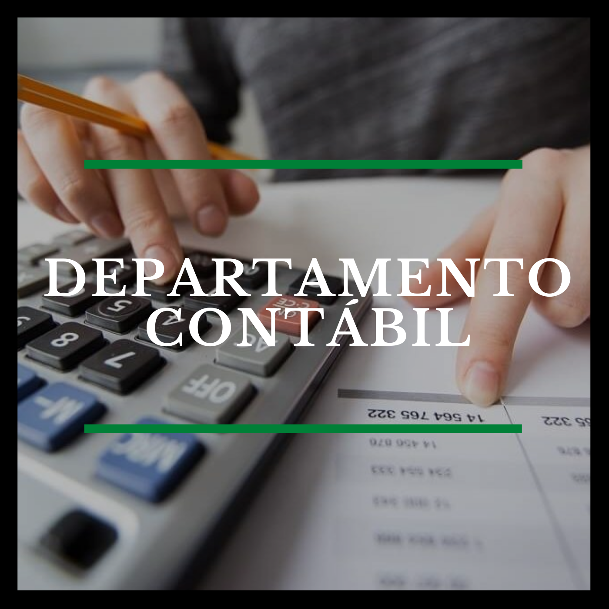

Favoritos dos Departamentos
Fiscal
Pessoal

Contábil
Societário
Fechar
Departamento Fiscal
Gerar PGMEI
Nota do milhão
GISS ONLINE
Nota do MEI
PGDAS Direto
Nota de Barueri
Nota de Curitiba
Nota de Lins
Acesso as notas de Comércios
Departamento Pessoal
eSocial
INSS
FGTS - Caixa Econômica
Departamento Contábil
Conselho Federal de Contabilidade
IBPT
Sebrae
Departamento Societário
Junta Comercial
Portal Gov - Empresas
CNPJ - Receita Federal
DUC Prefeitura
eCAC
Portal 156
Redeseim
Sintegra
Consulta optante